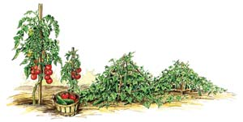
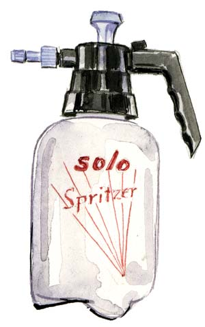

It happens in the best of gardens. Your plants are growing beautifully, and then you notice some of them are being consumed by pathogenic (from the Greek pathos, meaning suffering) microorganisms. The good news is you don’t have to be a plant pathologist to prevent many of the diseases that threaten a food garden, because disease-resistant varieties that are grown in soil enriched with organic matter usually stay healthy when the going gets tough.
Cured compost helps plants prime themselves to better handle challenges from diseases while improving the soil’s tilth. Providing enough water to avoid drought stress helps, too. Many gardeners include seaweed sprays in their garden’s preventive health care program, which provide nutrients for both plants and beneficial microorganisms.
Still, some leaves will shrivel and entire plants may sometimes suddenly collapse. To offer the best help to troubled plants, first you’ll need to know how different types of diseases tick. Seeing is believing. In late summer, most gardens offer some examples of common garden diseases, such as leaf blemishes and fruit rots, stem and root infections, and viral diseases spread by insects.
Let’s start by looking at your tomatoes, especially the leaves closest to the ground. That area stays damp longer than the plant’s high branches, and the leaves down there are getting old - two factors that make them prime victims for early blight (dark brown patches) or several other leaf spot diseases, including gray leaf spot and Septoria leaf spot. All are caused by fungi that busily release millions of spores, which spread to new leaves by the time the colonies become big enough to see. If those new leaves are damp and temperatures are right, the spores germinate and penetrate the leaf using enzymes to melt entryways into plant cells, and a new leaf spot is born.
Leaf blemishes come in a variety of colors. Among your squash, you may see some white patches of powdery mildew, which is caused by spore-producing fungi that weaken plants by robbing leaves of their ability to perform efficient photosynthesis. You might see streaks of cinnamonlike rust in your corn, or patches of orange rust powder on bramble fruits or beans - more examples of spore-producing parasitic fungi. If you grow fruits, the velvety brown patina on your shriveled peaches or plums is caused by brown rot and Botrytis. Other spore-producing fungi turn strawberries and grapes into moldy mummies.
Resistant varieties are available for many of these diseases - especially powdery mildew of squash family crops and various blemishers of beans. (There are no highly resistant varieties to help prevent tomato early blight, grape powdery mildew, or brown rot of peaches, plums and cherries.) Once an outbreak is underway, you can slow its spread if you move in during a period of dry weather and clip off affected leaves, fruits or branches, but only if the foliage is dry. Fungal spores usually arrive in the garden on the wind or on insects’ feet, but nothing spreads spores faster than a gardener mucking around in damp, diseased foliage or fruits.
Judicious grooming followed by a cleansing drench with a fine spray of water will reduce the number of spores present on the plants, and should you catch an outbreak early, there are several sprays that make good follow-up treatments. Or, the sprays can be used as preventive measures, if past experience makes you think an outbreak is likely.
When exposed to sunlight, plain milk diluted in water (one-half cup milk to 2 cups water) briefly changes into a disinfectant compound that’s murder on fungal spores yet gentle to plant leaves. You should see results after two sprays applied three days apart.
Baking soda (1 teaspoon per quart of water, with a few drops of liquid soap added to help it stick) is an old and trusted intervention, but it’s hard to get good coverage on plants with hairy leaves. A product called GreenCure (sold wholesale as MilStop) is based on potassium bicarbonate, baking soda’s first cousin, held in suspension through a unique process developed by Ken Horst, professor emeritus of plant pathology, at Cornell University. New fungal colonies that are just beginning to grow (and are still too small to see) suffer shriveled hyphae (the fungal counterpart to roots) when exposed to bicarbonate sprays.
Some research indicates that compost tea sprays can reduce disease, but I don’t recommend using compost tea as a foliar spray on food plants. The bacterial load in compost tea is unpredictable, and may include salmonella, E. coli and other microorganisms that can make you extremely sick. If you want to stage a microbial war against leaf-spotting or fruit-rotting fungi, it is much safer to use Serenade or another packaged biofungicide based on Bacillus subtilis - an aggressive naturally occurring bacterium that destroys many types of fungi.
Various fungicides containing sulfur and copper are allowed for restricted use on organically grown food crops, but copper can wreak havoc on your soil’s food web. Once it drips into the soil, copper does not break down or leach away, and even moderate copper levels are toxic to earthworms and many soil microorganisms. Sulfur is safer for soil life, but sulfur sprays often injure plant leaves, especially in hot weather, and prolonged use of sulfur could make soil too acidic.
Fungi are essential components of any healthy soil food web, but some soilborne fungi such as Fusarium and Phytopthora species are on gardeners’ most unwanted lists. Different Fusarium strains attack tomatoes, onions, basil and many other plants, first by stripping off the roots’ outer tissues (causing the plants to grow slowly and turn yellowish), and then by clogging up the plants’ stems, at which point you see a steady wilting. Verticillium wilt often looks similar, only without the yellowing, and the same complex of fungi that cause “damping off” of seedlings can emerge as the culprits behind plants that collapse due to sudden root rot.
Numerous plant varieties are available that offer good resistance to these and other soilborne diseases; the best way to find resistant varieties is to buy seeds from the better seed catalogs, which list specific disease resistances. You can further reduce problems by adding compost to your soil and rotating crops so they are not planted in the same place more often than once every three years. Promptly removing plants that exhibit symptoms of root problems (for example chronic thirst and little or no new growth) also will reduce the number of destructive fungi left behind in the soil.
Soil biologists have identified several microorganisms that can outcompete or even attack pathogenic fungi in the soil, and some have been developed into organic fungicides. These products are especially useful in greenhouses, where soil diseases spread like wildfire, or when starting seedlings. Here are four examples:
Plant pathogens can’t fly on their own, but the tiniest of them all - viruses - often travel for miles inside the bodies of leafhoppers, aphids, flea beetles, whiteflies and thrips. These insect carriers, or vectors, also provide entry holes for the viruses when they puncture leaves or stems with their mouthparts. Once inside a plant, viruses interfere with the plants’ inner communication systems and instruct them to grow in odd ways that serve the virus rather than the plant. Squash family crops infected with cucumber mosaic virus show thick, brittle leaves mottled with patches of dark green and yellow, but when the same virus hits tomatoes or peppers, you see thin, stringy leaves. Beans stricken with curly top virus develop spirals of flowering stems that fail to set fruit. Some plants do outgrow viral infections, but most decline slowly and rarely produce a good crop. If you see plants that “don’t look right,” it’s best to remove them to prevent viruses from spreading to neighboring plants.
Viruses can travel only as far as insects can carry them, so they tend to be local or regional phenomena. Once you learn that a certain virus is prevalent in your area - for example pea enation virus in the Northwest or maize (corn) dwarf mosaic virus in the South and East - growing resistant varieties is your best defense. In cases where genetic resistance is not available, you may be able to exclude insect vectors with row covers, though really tiny insects often find ways to breach even these barriers. Alternatively, you can deter them with aluminum-coated reflective mulch such as Brite’Nup or with sheets of cardboard covered with aluminum foil, shiny side out. Insects are confused by the light-mirroring effect of the mulch, so they stay away until the plants become so big and leafy that they cover the mulch. In numerous research trials from Florida to California, reflective mulches have proven their worth as viral deterrents, often resulting in huge increases in the productivity of cantaloupes, pumpkins and tomatoes in areas where viruses are rampant.
Do not expect to emerge from battles with garden diseases without a few scars - and a new appreciation for the power of prevention. Wisdom comes with experience. After you have grown a food garden for a few seasons, you’ll know which diseases are most likely to appear, and that puts you in a much better position to prevent them in the first place.
You can prevent many potential garden diseases by using these strategies:
Disease Treatment Options | |
Treatment | Helps Prevent |
Milk spray | Many leaf spot diseases, including powdery mildew |
Baking soda | Many leaf spot diseases, including powdery mildew |
MildewCure (2) | Many leaf spot diseases, including powdery mildew |
Serenade (1) | Many diseases of leaves and fruits |
SoilGard | Damping off, other root rot diseases |
Mycostop (1) | Fusarium, other root rot diseases |
RootShield (2) | Many root rot diseases |
Contans (3) | Stem and root rot of lettuce, cabbage |
Reflective mulch (1) | Insect-vectored viruses |
The products mentioned above are available at stores that sell organic gardening supplies, or through the mail-order companies listed below.
1. Peaceful Valley Farm Supply
Grass Valley, Calif.
(888) 784-1722
2. Johnny’s Selected Seeds
Winslow, Maine
(877) 564-6697
3. Mark Seed Co.
Perry, Iowa
(800) 383-6275
The presence and severity of garden diseases varies with climate, so check with your state extension service to see if there’s a good regional reference available, such as the University of Georgia’s Diseases & Conditions of Vegetables in Georgia, published in 2006. If you would rather use the Web to find mug shots of garden diseases, you might start with Oregon State University’s picture index or Cornell University’s Vegetable MD Online.
|
 ELAYNE SEARS You can prevent many potential garden diseases by using these strategies: wide spacing and trellises, mulching and applying aged compost. |
 ELAYNE SEARS Use a sprayer such as this to apply plant disease treatments. |
|